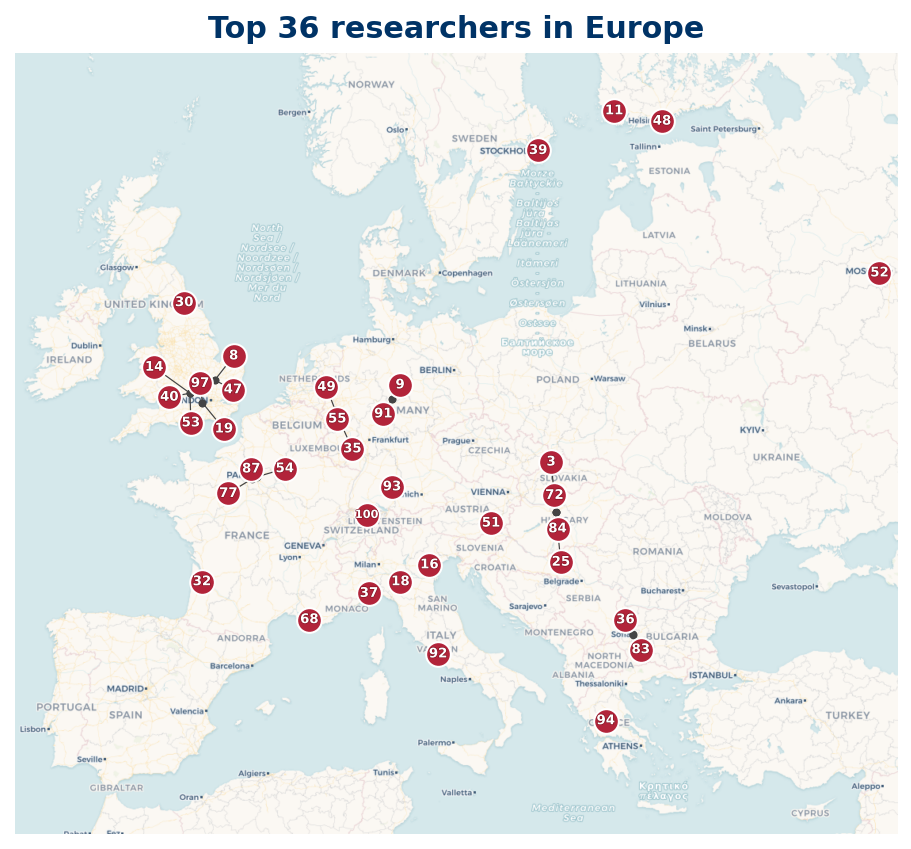

Europe
Top 100 researchers based in Europe
42 Top 100 researchers are based in Europe.

Listing
| Rank | Name | Institution | Country |
|---|---|---|---|
| 4 | Kaisa Matomäki | Turku University of Applied Sciences | FI |
| 6 | Joni Teräväinen | University of Cambridge | GB |
| 7 | James Maynard | University of Oxford | GB |
| 8 | Jörg Brüdern | University of Göttingen | DE |
| 11 | Janos Pintz | Alfréd Rényi Institute of Mathematics | HU |
| 12 | Ben Green | Mathematical Institute of the Slovak Academy of Sciences | SK |
| 14 | Tim Browning | Institute of Science and Technology Austria | AT |
| 16 | Richard P. Brent | University of Oxford | GB |
| 17 | Pieter Moree | Max Planck Institute for Mathematics | DE |
| 19 | Alessandro Languasco | University of Padua | IT |
| 22 | D. R. Heath-Brown | University of Oxford | GB |
| 26 | Glyn Harman | Royal Holloway University of London | GB |
| 27 | Olivier Ramaré | Château Gombert | FR |
| 28 | Doychin Tolev | Sofia University "St. Kliment Ohridski" | BG |
| 30 | Alessandro Zaccagnini | University of Parma | IT |
| 31 | Alberto Perelli | University of Genoa | IT |
| 34 | Antal Balog | Franz Liszt Academy of Music | HU |
| 40 | Gautami Bhowmik | Université de Lille | FR |
| 41 | Emmanuel Kowalski | ETH Zurich | CH |
| 47 | C. Y. Yıldırım | National Research, Development and Innovation Office | HU |
| 48 | Joël Rivat | Institut de Mathématiques de Marseille | FR |
| 51 | H. A. Helfgott | ParisTech | FR |
| 54 | S. I. Dimitrov | Sofia University "St. Kliment Ohridski" | BG |
| 56 | S. W. Graham | National Research, Development and Innovation Office | HU |
| 57 | Hung M. Bui | University of Manchester | GB |
| 59 | Maxim Aleksandrovich Korolev | Russian Academy of Sciences | RU |
| 64 | Jean‐Marc Deshouillers | Centre National de la Recherche Scientifique | FR |
| 66 | Ahmet M. Güloğlu | Bilkent University | TR |
| 67 | Pär Kurlberg | KTH Royal Institute of Technology | SE |
| 68 | Étienne Fouvry | Université Paris-Saclay | FR |
| 71 | Akshat Mudgal | University of Warwick | GB |
| 73 | Karin Halupczok | Heinrich Heine University Düsseldorf | DE |
| 76 | Helmut Maier | Helmholtz-Institute Ulm | DE |
| 78 | Ph. Michel | Université Paris-Sud | FR |
| 80 | Jie Wu | Centre National de la Recherche Scientifique | FR |
| 82 | Valentin Blomer | University of Bonn | DE |
| 85 | Julia Brandes | Chalmers University of Technology | SE |
| 89 | Christian Elsholtz | Graz University of Technology | AT |
| 90 | Владимир Николаевич Чубариков | Lomonosov Moscow State University | RU |
| 94 | Claus Bauer | Dolby (Netherlands) | NL |
| 96 | Alexander P. Mangerel | Durham University | GB |
| 97 | Lior Bary-Soroker | Tel Aviv University | IL |